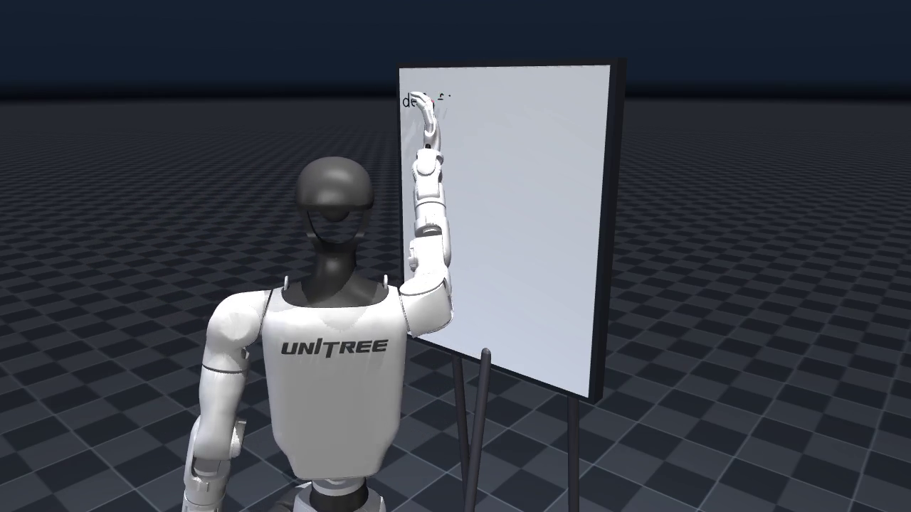
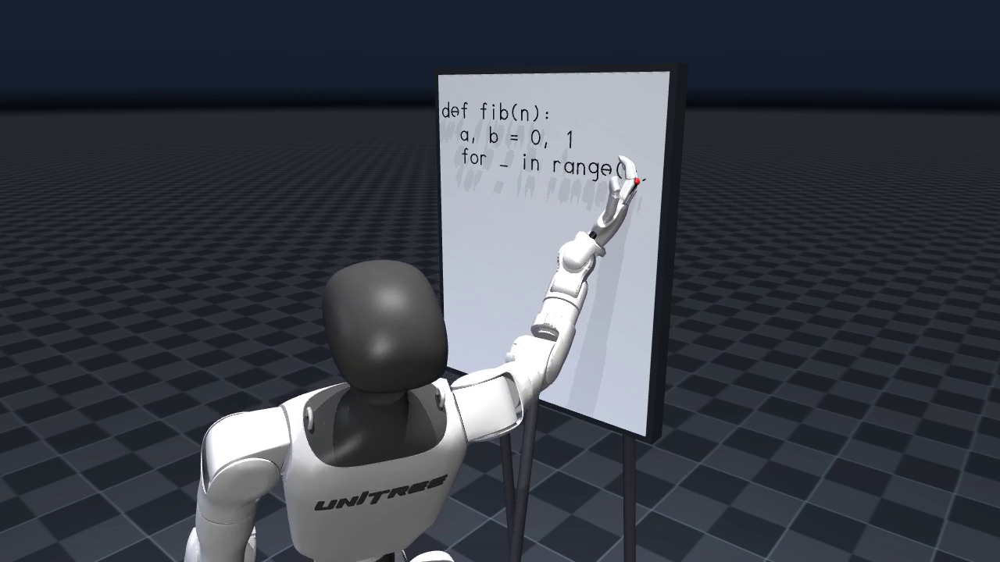
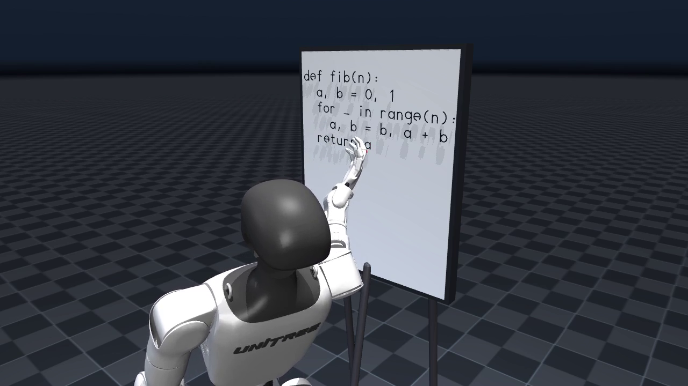

A Unitree G1 humanoid physically writes Python on a whiteboard — rebuilt with
MuJoCo and the official MuJoCo Menagerie Unitree G1 model. The robot writes the Fibonacci script
letter by letter.
def fib(n):
a, b = 0, 1
for _ in range(n):
a, b = b, a + b
return a
Frames from the simulation

Early — first strokes

Mid — halfway through the script

Final — the finished script
Physically simulated (MuJoCo 3.x, 500 Hz)
Full rigid-body dynamics of the 29-DoF Menagerie Unitree G1 (masses, inertias, meshes, joint limits, friction loss, armature from the official model)
The Menagerie position actuators (kp=500, critically damped) that track the joint trajectory, including their force limits
Gravity, the easel, the pen rigidly held in the right hand
Scripted (not physics)
The whiteboard text path itself: letter strokes are a small hand-made vector font; the pen-tip Cartesian path is scripted
The joint trajectory: computed offline by damped least-squares inverse kinematics over 9 joints, then tracked by the simulated actuators. Residual pen-tip error during drawing is ~1 mm
The pelvis is welded to the world: an upper-body manipulation demo, not a balance controller
Ink: stroke segments are revealed where the actual simulated pen tip passes within 12 mm of them
Run it
pip install -r requirements.txt
./fetch_model.sh # sparse-clones MuJoCo Menagerie (unitree_g1 only)
MUJOCO_GL=egl python3 write_python.py # use MUJOCO_GL=osmesa or glfw as available
No physical robot was used. Both this and the original post are simulations. Inspired by @dimentary's sim video (quoted by @chris_j_paxton).